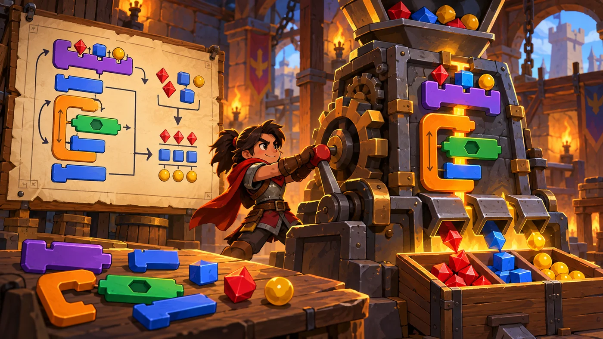
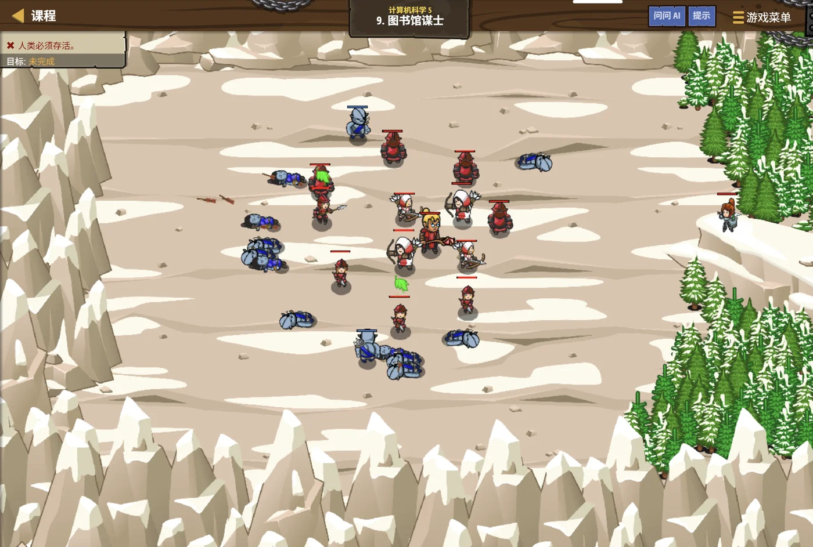

扣哒考级 · GESP 图形化 四级 · 第 1 单元 | 机械乐园 COGWHEEL PARK
万能机械臂 函数
Functions

戈登
机械师 · 你的向导
机械乐园的车间里立着一台巨大的机械臂。工程师按下一个按钮，
机械臂"咔、咔、咔"地做了一整套动作，一个标准的零件就落进了收集篮。
"这一整套，我只教过它一次。"工程师说， "之后每次要用，按一下就行。"
"这一整套，我只教过它一次。"工程师说， "之后每次要用，按一下就行。"
戈登 · 机械师
函数是四级的地基——后面每一单元的脚本都会用到它。考试最爱考两句："只定义不调用会怎样"（什么都不会发生）、 "调用 3 次里面的积木跑几遍"（跑 3 遍，次数要相乘）。
0 单元导语与目标
Before We Start
0.1 学习目标
- 理解函数：把一段常用的积木打包起来、起个名字；
- 会定义（新建积木）和调用（使用它）一个函数；
- 分清函数与事件的差别；
- 理解参数（把东西递进去）与返回值（把结果带回来）；
- 会用函数把又长又重复的脚本变短。
0.2 考纲对照
| 考纲知识块 | 考纲要求 | 本单元小节 |
|---|---|---|
| 1 函数 | 函数的创建、参数的设置、返回值、函数的调用 | 1.1～1.2、2.1～2.3、3.1～3.3、4.1～4.2 |
| （知识点详述第 1 条） | 了解函数的概念及使用方法，了解多参函数，并能够熟练应用 | — |
函数是四级的第一块，也是"模块化编程"的起点。' '从这一单元起，你写的程序开始有"零件"了。
1 为什么要用函数
Why Functions
1.1 重复的积木太长
机械乐园的车间里立着一台万能机械臂。工程师不用每次重新教它一套动作—— 只要按一下"标准动作"的按钮，它就把那一整套做一遍。
assets/illustrations/scratch-L4-01-01_universal_arm.webp
【配图位】乐园车间里一台带输入口与输出口的万能机械臂，侧边有摇柄，工程师投入零件、取出成品，背景还有同样的机械臂。（提示词见《GESP配图清单与AI绘图提示词》第四节 4-1）
图 2（SVG）：不用函数 vs 用函数
打个比方：函数就像给一段程序做成了一个"按钮"。
本来要按十下的一件事，现在按一下就行——按钮里面装的还是那十下，只是你看不见了。
本来要按十下的一件事，现在按一下就行——按钮里面装的还是那十下，只是你看不见了。
1.2 给一段程序起个名字
函数的三个好处：① 少写——重复的部分只写一次；
② 好改——要调整就改定义那一处；
③ 好读——"画正方形"这个名字本身就在说明这段程序在干什么。
② 好改——要调整就改定义那一处；
③ 好读——"画正方形"这个名字本身就在说明这段程序在干什么。
2 定义与调用
Define and Call
2.1 定义：新建一块积木
在自制积木（我的积木）分类里点"制作一块积木"，给它起个名字， 就得到一块新积木；脚本区同时会多出一顶帽子："定义 你的积木名"。
重点示例：定义一个新积木
图形化积木
读法 定义里面的积木平时不会执行，只有被"调用"时才会跑一遍
2.2 调用：直接用它的名字
重点示例：调用一次，画一个正方形
图形化积木
读法 紫色的"画正方形"就是刚做出来的新积木。它出现一次，定义里的那几块就执行一遍
2.3 函数和事件有什么不一样
图 3（SVG）：函数与事件的区别
一句话记住：写好了函数却没人调用，它永远不会执行。这一点和事件很像——都是"要有东西叫它"。
3 函数的三个阶段
Three Stages of a Function
3.1 运行前：先把定义写好

assets/illustrations/scratch-L4-01-02_function_stages.webp
【配图位】围绕机械臂的三个阶段——墙上挂操作图纸、拉下摇柄、成品落进收集篮。（提示词见《GESP配图清单与AI绘图提示词》第四节 4-1）
图 5（SVG）：函数调用的过程
3.2 运行时：调用一次执行一遍
调用几次，就跑几遍：函数定义里的那几块积木不会"只跑一次然后记住"。
"画正方形"被调用了 5 次，里面的"移动 + 转 90 度"就完整地跑了 5 × 4 = 20 次。
"画正方形"被调用了 5 次，里面的"移动 + 转 90 度"就完整地跑了 5 × 4 = 20 次。
3.3 运行完：回到调用处继续
重点示例：跑完就回来，接着往下走
图形化积木
要点 函数跑完会回到刚才调用它的那一块后面，继续执行下面的积木——不会跑到别的地方去
4 参数与返回值
Parameters and Return Values
4.1 参数：把东西递进去
重点示例：给新积木加一个"输入口"
图形化积木
要点 做积木时点"添加输入项"，就多了一个"边长"的槽。调用时填 80 就画边长 80 的，填 40 就画 40 的
打个比方：参数就像投币口——同一台机器，投一块钱出一瓶水、投三块钱出三瓶。
函数还是那个函数，变的是递进去的东西。
函数还是那个函数，变的是递进去的东西。
4.2 返回值：把结果带回来
重点示例：让它算个结果带回来
图形化积木
要点 勾上"返回结果"后，函数就变成一块椭圆形的值积木，能塞进任何要填内容的地方
图 6（SVG）：函数的四种口
一个判断标准：只是"做一件事"的函数，不用返回值；要"算出一个数"的函数，就该有返回值。
"画正方形"是做事，不需要返回值；"算周长"是算数，必须有返回值。
"画正方形"是做事，不需要返回值；"算周长"是算数，必须有返回值。
5 代码实战
Level Practice
这一关要把好几段动作重复用很多次——正是函数最擅长的场景。
关卡
图书馆谋士
进入关卡 →
故事：
图书馆的迷宫一层套一层，每一层都要"先看左边、再看右边、然后往前走"。
这套动作要重复几十遍——写几十遍太长了，做成一块积木就清爽了。

assets/stages/py-L4-01-stage1_library_strategist.webp
【关卡截图位】请把《图书馆谋士》的游戏画面截图放到此处（放入 assets/stages/ 目录，文件名为 py-L4-01-stage1_library_strategist.webp）。
思路：把"检查左右 + 前进"这一套动作定义成一个新积木， 主脚本里只留下调用。主脚本因此变得又短又清楚。
重点示例：把一套动作做成积木
图形化积木
主脚本：调用它
读法 定义里放"一套动作"，主脚本里只写"重复 6 次：侦测并前进"
自己试一试：把"侦测并前进"这一段直接复制到循环里、不用函数，也能跑通。但如果你要改"右转 90 度"改成"右转 45 度"，两种写法的工作量差多少？
这一关真正想让你体会的是：函数让主脚本"看得懂"了。
主脚本只有一句"重复 6 次：侦测并前进"——'
光看这一句就知道程序在干什么，细节藏在定义里。
模块化编程的第一步：把"一件独立的小事"打包成一个函数，主程序里只剩"这些小事按什么顺序做"。
去扣哒世界闯这一关 →
6 常见陷阱
Common Traps
陷阱 1：只写了"定义"，忘了调用。定义里的积木平时不执行，程序跑起来什么都没发生。
正确做法：定义完，还要在需要的地方把新积木拖出来用一次。
正确做法：定义完，还要在需要的地方把新积木拖出来用一次。
陷阱 2：把"定义"当成"事件"用。"定义 画正方形"不是"当绿旗被点击"——它不会自己开始。
正确做法：想让它跑起来，必须有别的地方调用它。
正确做法：想让它跑起来，必须有别的地方调用它。
陷阱 3：以为函数里的积木"只跑一次"。函数被调用几次，里面的积木就完整地跑几遍。
正确做法：数执行次数时，要算"调用次数 × 里面每块积木的数量"。
正确做法：数执行次数时，要算"调用次数 × 里面每块积木的数量"。
陷阱 4：需要结果的函数忘了勾"返回结果"。那样它就只是一块普通积木，算出的数带不回来。
正确做法：要当"值"用的函数，必须勾上返回，并在末尾用"返回值"积木交代结果。
正确做法：要当"值"用的函数，必须勾上返回，并在末尾用"返回值"积木交代结果。
7 题目练习
Practice
第 1 题改编自 2026 年 6 月 · 图形化编程 四级 第 3 题，其余为原创练习题。
改编自 2026 年 6 月 · 图形化编程 四 级 · 第 3 题单选题
下列有关自制积木（函数）的说法中，错误的是（ ）。
A.自制积木没有返回值时，若需保存计算结果，通常要在自制积木外部借助变量来实现
B.一个角色创建的自制积木，默认情况下可以被其他角色直接调用
C.想让绘制过程不显示、直接呈现最终图形，可以在"制作新的积木"窗口里勾选"运行时不刷新屏幕"
D.使用自制积木可以避免重复编写相同的代码，提高程序的可读性
B.一个角色创建的自制积木，默认情况下可以被其他角色直接调用
C.想让绘制过程不显示、直接呈现最终图形，可以在"制作新的积木"窗口里勾选"运行时不刷新屏幕"
D.使用自制积木可以避免重复编写相同的代码，提高程序的可读性
查看答案与详解
答案：B。自制积木是"长在角色身上"的——默认只能在创建它的这个角色里调用，别的角色看不见它，自然也没法直接调用。
A 正确：不勾"返回结果"时，函数只是"做完了事"，算出来的东西要靠外部变量接着；
C 正确：勾上"运行时不刷新屏幕"可以"画完再显示"，画复杂图形时很有用；
D 正确：这正是函数最实在的好处。
题目问的是"错误的"，所以选 B。
对应小节1.2、2.3 函数的作用范围。
A 正确：不勾"返回结果"时，函数只是"做完了事"，算出来的东西要靠外部变量接着；
C 正确：勾上"运行时不刷新屏幕"可以"画完再显示"，画复杂图形时很有用；
D 正确：这正是函数最实在的好处。
题目问的是"错误的"，所以选 B。
对应小节1.2、2.3 函数的作用范围。
原创练习题单选题
在图形化编程中，新建一块自制积木（函数）之后，关于"定义 画正方形"这一段，说法正确的是（ ）。
A.点绿旗后它就会自动执行
B.它不会自动执行，只有被调用时才运行
C.它和"当绿旗被点击"是同一块积木
D.它只能被调用一次
B.它不会自动执行，只有被调用时才运行
C.它和"当绿旗被点击"是同一块积木
D.它只能被调用一次
查看答案与详解
答案：B。函数是"零件"，不是"开关"——定义里的积木平时静静躺着，只有别的地方调用了它，它才跑一遍。
A、C 错：那是事件的特性（"当绿旗被点击"）；
D 错：函数可以被调用任意多次，这正是它存在的理由。
对应小节2.1、2.3 定义与调用。
A、C 错：那是事件的特性（"当绿旗被点击"）；
D 错：函数可以被调用任意多次，这正是它存在的理由。
对应小节2.1、2.3 定义与调用。
原创练习题单选题
自定义积木"画正方形"里装着"移动 80 步、右转 90 度"这两块，一共重复 4 次。主脚本里调用了它 5 次，那么"移动 80 步"一共执行了多少次（ ）。
A.5 次
B.9 次
C.20 次
D.25 次
B.9 次
C.20 次
D.25 次
查看答案与详解
答案：C。一次调用会把定义里的那几块完整地跑一遍：循环 4 次 → "移动 80 步"执行 4 次；
调用 5 次 → 4 × 5 = 20 次。
A 错：漏掉了定义里的 4 次循环；
B 错：4 + 5 = 9 是"加法"，嵌套和调用一律用乘法；
D 错：把次数多算了一次。
对应小节3.2 调用一次执行一遍。
调用 5 次 → 4 × 5 = 20 次。
A 错：漏掉了定义里的 4 次循环；
B 错：4 + 5 = 9 是"加法"，嵌套和调用一律用乘法；
D 错：把次数多算了一次。
对应小节3.2 调用一次执行一遍。
原创练习题单选题
要让自制积木"画正方形"能画出不同大小的正方形，应该在制作积木时（ ）。
A.添加一个输入项（参数）"边长"
B.勾上"返回结果"
C.改用"一直重复"
D.多建几个同名的积木
B.勾上"返回结果"
C.改用"一直重复"
D.多建几个同名的积木
查看答案与详解
答案：A。想让同一个函数"每次做出来的东西不一样"，就要给它一个输入口（参数）——调用时填 80 画大的、填 40 画小的。
B 错：返回值是"算出一个数带回去"，和"画多大"无关；
C 错：那只会让它一直画下去；
D 错：建多个同名积木反而会冲突，而且也没解决"大小可变"的问题。
对应小节4.1 参数：把东西递进去。
B 错：返回值是"算出一个数带回去"，和"画多大"无关；
C 错：那只会让它一直画下去；
D 错：建多个同名积木反而会冲突，而且也没解决"大小可变"的问题。
对应小节4.1 参数：把东西递进去。
原创练习题多选题
使用函数（自制积木）的好处有哪些（ ）。
A.重复的动作只写一次，脚本更短
B.要修改时只改定义那一处，所有调用处一起生效
C.给积木起个好名字，主程序更容易读懂
D.用了函数，程序运行速度一定会变快几十倍
B.要修改时只改定义那一处，所有调用处一起生效
C.给积木起个好名字，主程序更容易读懂
D.用了函数，程序运行速度一定会变快几十倍
查看答案与详解
答案：A、B、C。这三条正是函数最实在的好处。
D 错：函数主要省的是"写和改"的力气，并不会让计算机算得更快——它做的事和原来一样多。
对应小节1.1、1.2 为什么要用函数。
D 错：函数主要省的是"写和改"的力气，并不会让计算机算得更快——它做的事和原来一样多。
对应小节1.1、1.2 为什么要用函数。
原创练习题判断题
在图形化编程中，一个自制积木（函数）如果被调用了 3 次，它定义里的积木就会完整地执行 3 遍。（ ）
查看答案与详解
答案：正确（√）。函数是"用一次跑一遍"的：调用 3 次，定义里的那几块就完整地跑 3 遍。
数执行次数的时候记住这个公式：总次数 = 调用次数 × 定义里被重复的积木数。
对应小节3.2 调用一次执行一遍。
数执行次数的时候记住这个公式：总次数 = 调用次数 × 定义里被重复的积木数。
对应小节3.2 调用一次执行一遍。
8 本单元小结
Unit Summary
戈登 · 机械师
函数就是给一段程序做成的"按钮"。四级的每一页都要用到它。三句话记住：写了定义不调用不会跑、调用几次跑几遍、 要带结果回来就得勾返回。
你在机械臂旁学到了什么
- 函数（自制积木）：把一段积木打包、起名，写一次用很多次；
- 定义与调用：定义里的积木平时不执行，被调用才跑；
- 函数 vs 事件：事件是外面的开关，函数是里面的零件；
- 参数：输入项，让同一个函数每次"用不同的东西"；
- 返回值：算出的结果带回来，函数就能当"值"用。
下一站：多轴机械臂
这一单元的机械臂只有一个投币口。如果一台机器要同时接收 角度、力度、颜色三路输入呢？下一单元我们学多参函数。